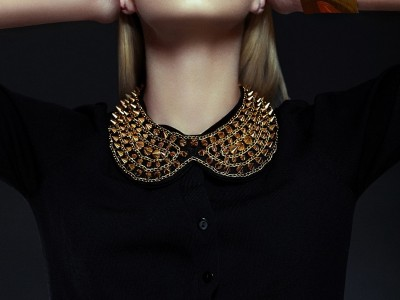
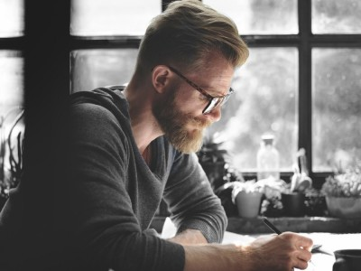
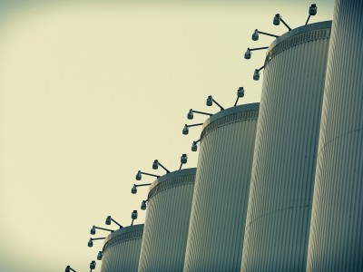
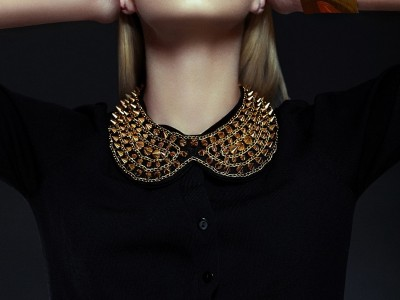
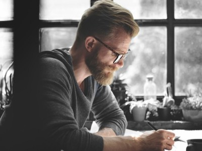
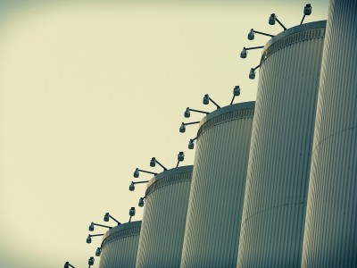

每每刷新社交网络，总会发现有些人拍的照片就是好看，心想这不就是我想拍出来的效果吗？ 可拍照是门“技术活”，那些看似随意的照片，你如果真的随意一拍，最后总能找到问题、站姿不美、脸有点大、显矮显胖…… 其实那些照片美美的模特明星们，都有自己的拍照小技巧，学会之后，拍出一张好看的照片，就简单多了哦。
more info

无论是朋友圈还是instagram，你发的照片自然随意才是真。所以呆呆对着镜头的大头照真的已经不流行了。可是不会摆怎么办，很尴尬有没有？最简单的方法就是借助“道具”了。
对于街头自拍，也可以利用饮料做造型，假装小口喝饮料的动作，还能让下巴更立体。当然，外出游玩，另外一个道具——墨镜别忘记。

 




